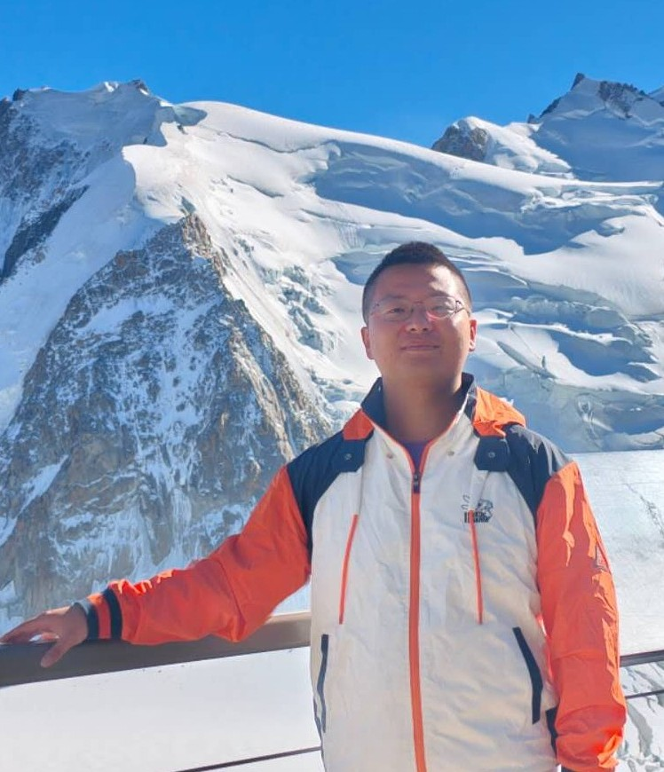

Scaling Laws and Spectra of Shallow Neural Networks in the Feature Learning Regime
Feature-learning scaling laws and phase diagrams linking generalization to the power-law spectra of learned weights.
Conference page ↗Code ↗EPFL · Lausanne, Switzerland
Understanding how neural networks learn.
I am a PhD student in Computer Science at École Polytechnique Fédérale de Lausanne (EPFL), advised by Florent Krzakala and Lenka Zdeborová.
My research focuses on the theoretical foundations of machine learning. I use tools from statistical physics and high-dimensional statistics to study attention, in-context learning, scaling laws, and optimization dynamics.
Seeking full-time internships in 2027 (flexible timing).

Selected work
* Equal contribution
Feature-learning scaling laws and phase diagrams linking generalization to the power-law spectra of learned weights.
Conference page ↗Code ↗A high-dimensional theory of SGD revealing how attention parameterization controls symmetry breaking and signal recovery.
Paper ↗Exact predictions for attention generalization and weight spectra, explaining low-rank structure, spectral outliers, and emergent scaling laws.
Paper ↗Code ↗Generalization phase diagrams showing how task diversity and context length favor different learning architectures.
Paper ↗When SGD favors flat versus sharp minima, and how the answer depends on label-noise anisotropy.
Paper ↗A unified model connecting sudden learning and training-time scaling laws through symmetry and the sequential activation of learning modes.
Paper ↗Code ↗Yizhou Xu and Liu Ziyin
Yizhou Xu, Antoine Maillard, Lenka Zdeborová, and Florent Krzakala
Yizhou Xu, Florent Krzakala, and Lenka Zdeborová
Code ↗Liu Ziyin*, Yizhou Xu*, and Isaac Chuang
Code ↗Liu Ziyin*, Yizhou Xu*, and Isaac Chuang
The path so far
2024 — Present
PhD in Computer Science
EPFL AI Center PhD Fellowship, 2026
2019 — 2023
Bachelor’s in Engineering Mechanics
Gold Medal · Asian Physics Olympiad, 2018
Feb — Jul 2024 · Trieste, Italy
Research Assistant · Low-rank matrix recovery, statistical physics, and random matrix theory.
Teaching Assistant · 2024 — Present